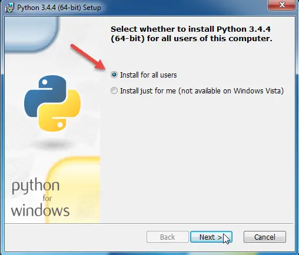
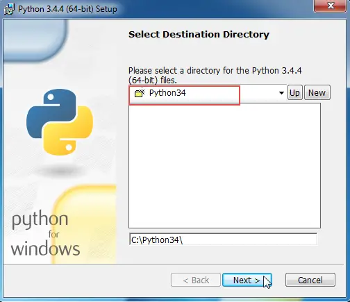
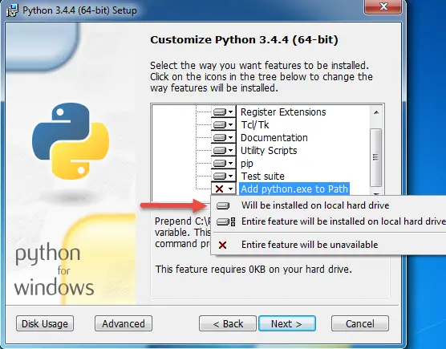
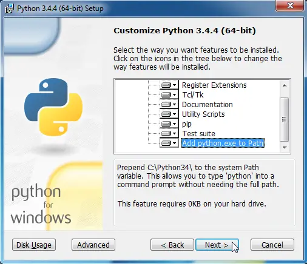
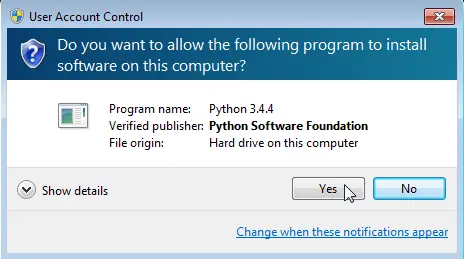
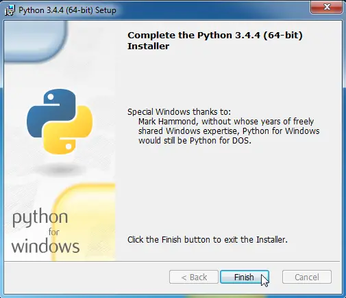
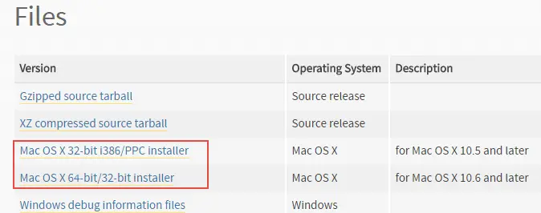
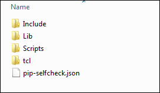
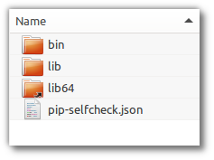

Installing Django
Last updated on July 27, 2020
To create a new Django application you must have the following things installed on your computer:
- Python.
- A Virtual Environment.
- Django.
Installing Python on Windows #
In this tutorial, we will use Python 3.4. Let's start by installing Python on Windows first.
Note: Throughout this course instructions are given for Windows, Ubuntu, and Mac. Most of the commands will work no matter which OS you are using. However, there are some commands which vary from one system to another. If that's the case, I have clearly mentioned it and provided commands specific to the system.
Windows users can download the Python setup from https://www.python.org/ftp/python/3.4.4/python-3.4.4.msi.
After downloading the installer double click to open it. Select "Install for all users" and click Next.

In the next window, the installer will ask you to select destination directory, keep it to default (i.e C:\Python34\) and click next.

This step is the most crucial. In this step, the installer will ask you to customize the Python installation. Scroll down a little and select "Add python.exe to PATH", click the dropdown icon in front of it and select "Will be installed on local hard drive". This allows us to invoke python.exe in the Command Prompt from anywhere in the file system without specifying it's full path.


Click Next. At this point, you may get a confirmation window like the following, asking you to confirm the installation. Select Yes to proceed.

The installer will take a minute or two, depending upon the speed of your system to complete the installation.

Once done. Click Finish to exit the installer. Now you should have Python 3.4 installed on your PC.
To verify the Python installation execute the following command in the Command Prompt.
C:\Users\Q>python --version
Python 3.4.4
C:\Users\Q>Python Package Manager #
In Python, we use pip (Python Package Index) to install and manage different packages (or libraries) available at https://pypi.python.org/pypi. It is important to note that pip itself is a package and is used to install other packages. The packages you install using pip will be installed in the directory C:/python34/lib/site-packages. Windows installer automatically installs pip by default, so you don't need to do anything else. To check the version of pip installed on your system execute the following command.
C:\Users\Q>pip --version
pip 7.1.2 from c:\python34\lib\site-packages (python 3.4)
C:\Users\Q>As you can see, this system has pip 7.1 and is installed under Python 3.4.
Installing Python on Linux #
On a Linux distribution like Ubuntu or Fedora, it is highly likely that Python 3.4 or above is installed. To check, open terminal and type the following command.
Q@VM1:~$ python3 --version
Python 3.5.1As you can see, my Ubuntu machine has Python 3.5 installed by default. Although the whole tutorial is geared towards Python 3.4, it would be perfectly fine if you choose to use Python 3.5. We will be using Django 1.10 in this course which only works with Python 3.4 and 3.5. So make sure you have either Python 3.4 or 3.5 installed on your system. Trying to use Django 1.10 with some other version of Python may result in unexpected issues.
If you want to work with Python 3.4 instead of Python 3.5 in Ubuntu type the following commands in the terminal.
Q@VM1:~$: sudo add-apt-repository ppa:fkrull/deadsnakes
Q@VM1:~$: sudo apt-get update
Q@VM1:~$: sudo apt-get install python3.4Execute each of these commands one by one on the command line. These commands first download the Python from ppa:fkrull/deadsnakes repository and then installs it on your system. On a slow connection the whole process may take some time, so please be patient. To invoke Python 3.4 type python3.4 instead of python3 in the command line as follows:
Q@VM1:~$ python3.4
Python 3.4.5 (default, Jul 15 2016, 16:39:07)
[GCC 5.4.0 20160609] on linux
Type "help", "copyright", "credits" or "license" for more information.
>>>To exit the Python shell hit Ctrl+D or type quit() in the shell.
Python installer for Ubuntu doesn't install pip. To install it execute the following command:
Q@VM1:~$ sudo apt-get install python3-pipTo verify the pip installation execute the following command.
Q@VM1:~$ pip3 --version
pip 8.1.1 from /usr/lib/python3/dist-packages (python 3.5)
Q@VM1:~$Notice that pip3 is installed as a package which belongs to Python 3.5, not Python 3.4.
Installing Python on Mac #
Most Mac comes with Python 2.7 installed by default. To install Python 3.4 on a Mac visit https://www.python.org/downloads/release/python-344/ and scroll down to bottom of the page, under Files select the installer corresponding to your version of Mac OS.

If you are using 32-bit version of Mac OS X or later download Mac OS X 32-bit i386/PPC installer and if you are using 64-bit version of Mac OS X or later download Mac OS X 64-bit/32-bit installer. On a 64-bit system, both installers will work.
After downloading the installer, double-click to start it and go through the installation process as usual.
Python installer for Mac OS also installs pip so you don't need to install anything else. To verify Python and pip installation execute the following commands in the terminal.
Qs-Mac:~ q$ python3 --version
Python 3.4.4
Qs-Mac:~ q$Qs-Mac:~ q$ pip3 --version
pip 9.0.1 from /Users/q/TGDB/env/lib/python3.4/site-packages (python 3.4)
Qs-Mac:~ q$Notice that in Ubuntu and Mac, we are checking the version of pip using pip3 --version instead of pip --version command as we did in Windows. This is because Linux/Mac usually comes pre-installed with Python 2 and most of the time pip --version command is associated with pip installed under Python 2.
Installing Python Virtual Environment #
Create a new directory named TGDB (short for "The Great Django Blog") using the mkdir command.
C:\Users\Q>mkdir TGDB
C:\Users\Q>We will use this folder to store our Django application. You can create this directory anywhere, location doesn't really matter. I am using Windows and I have created this directory in C:\Users\Q\ where Q is my username. Once done, change your current working directory to TGDB using the cd command, as follows:
C:\Users\Q>cd TGDB
C:\Users\Q\TGDB>Now we are ready to install Virtual Environment.
So what is this Virtual Environment?
A virtual environment helps us to run isolated instances of Python/Django projects on a machine without conflicting with one another. To understand the philosophy behind Virtual Environment, consider the following example:
Let's say we are working on two projects, a blog and a forum for two different clients. Our blog uses a library called super_library_v02, on the other hand, our forum uses super_library_v01. At a given point in time, we can only have a single version of super_library installed on our system, we can't have both versions simultaneously. A Virtual Environment helps us to tackle these kinds of problems easily.
A Virtual Environment solves this problem by creating a separate Python installation. So, no matter what libraries you install on a particular virtual environment using pip, will not conflict with the libraries available at the system-wide Python installation.
The package required to create these isolated environments is called virtualenv.
To install virtualenv on Windows open command prompt and type the following command.
C:\Users\Q\TGDB>pip install virtualenvTo install virtualenv in Ubuntu/Mac type the following command.
Q@VM1:~/TGDB$ pip3 install virtualenvTo create virtual environment type virtualenv command followed by the name of the virtual environment. Here is how you can create a virtual environment in Windows:
C:\Users\Q\TGDB>virtualenv env
Using base prefix 'c:\\python34'
New python executable in C:\Users\X\TGDB\env\Scripts\python.exe
Installing setuptools, pip, wheel...done.
C:\Users\X\TGDB>By default, virtualenv creates virtual environment using the version of Python under which it is installed. In the case of Windows, it is Python 3.4 whereas in Ubuntu it is Python 3.5.
C:\Users\Q>pip --version
pip 7.1.2 from c:\python34\lib\site-packages (python 3.4)To specify any other version of the Python use -p option as follows:
C:\Users\Q\TGDB>virtualenv env -p C:/Python27/python.exeThe above command will create a virtual environment using Python 2.7. Before specifying the version of the python using the -p option make sure that the version of the Python specified is installed on your computer.
We can use the same command as Windows to create a virtual environment in Ubuntu/Mac:
Q@VM1:~/TGDB$ virtualenv env
Using base prefix '/usr'
New python executable in /home/q/my_workspace/env/bin/python3
Also creating executable in /home/q/my_workspace/env/bin/python
Installing setuptools, pip, wheel...done.
Q@VM1:~/TGDB$In Ubuntu, the above command will create a virtual environment using Python 3.5 because virtualenv was installed as a package of Python 3.5.
In case you want to follow along using Python 3.4 in Ubuntu, delete the env directory created by virtualenv command and then create a new virtual environment using Python 3.4, as follows:
Q@VM1:~/TGDB$ virtualenv env -p /usr/bin/python3.4
Running virtualenv with interpreter /usr/bin/python3.4
Using base prefix '/usr'
New python executable in /home/Q/my_workspace/env/bin/python3.4
Also creating executable in /home/Q/my_workspace/env/bin/python
Installing setuptools, pip, wheel...done.
Q@VM1:~/TGDB$To know the absolute path of Python 3.4 use the which command.
Q@VM1:~/TGDB$ which python3.4
/usr/bin/python3.4
Q@VM1:~/TGDB$So what actually virtualenv command does?
The virtualenv command creates an isolated environment, a directory which we named env for developing applications using Django/Python. Once virtualenv finished setting up a new virtual environment, open Windows Explorer or Nautilus in Ubuntu to view the files and folders virtualenv has created for us inside the env directory.
In Windows, the contents of env directory should look like this:

In Ubuntu/Mac, the contents of env directory should look like this:

So what these files and folder contain?
These files and folder constitute a separate python installation. Any libraries or packages you install here will be available only inside this virtual environment, so you can work on your project without conflicting with other packages installed on the system.
Activating virtualenv #
We have created a virtual environment in the last step, to use it we first have to activate it.
Activating virtualenv in windows #
To activate virtual environment in Windows type the following command.
C:\Users\Q\TGDB>env\Scripts\activate.bat
(env) C:\Users\Q\TGDB>Activating virtualenv in Ubuntu/Mac #
On Linux/Mac, we use source command to activate virtual environment.
Q@VM1:~/TGDB$ source env/bin/activate
(env) Q@VM1:~/TGDB$Notice (env) in front of the prompt string, it indicates that your virtual environment is up and running. From this point on, any package you add or remove using pip will only affect this virtual environment. Your system-wide Python installation will remain intact. We can use pip list command to view packages installed in this virtual environment.
(env) C:\Users\Q\TGDB>pip list
DEPRECATION: The default format will switch to columns in the future. You can us
e --format=(legacy|columns) (or define a format=(legacy|columns) in your pip.con
f under the [list] section) to disable this warning.
pip (9.0.1)
setuptools (36.4.0)
wheel (0.29.0)
(env) C:\Users\Q\TGDB>This virtual environment has 3 packages installed. It is important to note that once the virtual environment is active you can invoke pip either using pip or pip3. This is true for Window, Ubuntu as well as Mac.
To deactivate virtual environment issue the following command.
(env) C:\Users\Q\TGDB>deactivateThis command is same for Windows, Ubuntu, and Mac. Now we are out of the virtual environment. Run pip list command again, but this time it will show you all the system-wide packages installed on your system.
C:\Users\Q\TGDB>pip list
certifi (2017.4.17)
chardet (3.0.4)
colorama (0.3.9)
decorator (4.0.11)
httpie (0.9.9)
idna (2.5)
ipython (6.1.0)
ipython-genutils (0.2.0)
jedi (0.10.2)
olefile (0.44)
pickleshare (0.7.4)
pip (7.1.2)
...
C:\Users\X\TGDB>Note: ... indicates that the code snippet is truncated to save space.
On Ubuntu/Mac, you should use pip3 list to view system-wide packages installed on the system.
In Ubuntu:
Q@VM1:~$ pip3 list
apturl (0.5.2)
beautifulsoup4 (4.4.1)
blinker (1.3)
Brlapi (0.6.4)
chardet (2.3.0)
checkbox-support (0.22)
command-not-found (0.3)
cryptography (1.2.3)
defer (1.0.6)
feedparser (5.1.3)
guacamole (0.9.2)
html5lib (0.999)
...
httplib2 (0.9.1)In Mac:
Qs-Mac:TGDB q$ pip3 list
pip (7.1.2)
setuptools (18.2)
virtualenv (15.1.0)
You are using pip version 7.1.2, however version 9.0.1 is available.
You should consider upgrading via the 'pip install --upgrade pip' command.
Qs-Mac:TGDB q$So these packages are available on my system-wide Python installation. Yours could be different.
In the next step, we will install Django.
Installing Django #
In this tutorial, we will use Django 1.10. To install Django open terminal and type the following command.
(env) C:\Users\Q\TGDB>pip install django==1.10This command fetches the Django framework from PyPI and installs it into your virtual environment. The output of the command should look like this:
(env) C:\Users\Q\TGDB>pip install django==1.10
Collecting django==1.10
Downloading Django-1.10-py2.py3-none-any.whl (6.8MB)
100% |################################| 6.8MB 80kB/s
Installing collected packages: django
Successfully installed django-1.10
(env) C:\Users\Q\TGDB>If you just want to install current stable version simply issue the following command.
(env) C:\Users\Q\TGDB>pip install djangoTesting the Installation #
Inside the virtual environment start the Python shell by typing python command.
(env) C:\Users\Q\TGDB>python
Python 3.4.4 (v3.4.4:737efcadf5a6, Dec 20 2015, 20:20:57) [MSC v.1600 64 bit (AM
D64)] on win32
Type "help", "copyright", "credits" or "license" for more information.
>>>If you are on Ubuntu/Mac start the Python shell using python3 (or python3.4) command.
To verify whether the installation was successful or not, import django package and call get_version() method as follows.
1 2 3 4 | >>> import django
>>> django.get_version()
'1.10'
>>>
|
If everything went fine you should get the version of the Django installed. If you have encountered any error go through all the above steps or post a comment in the box below and we will figure out the problem.
To exit the Python shell type Ctrl + Z (in Windows), Ctrl + D (in Linux/Mac) or just type quit().
1 2 3 4 5 6 | >>> import django
>>> django.get_version()
'1.10.5'
>>> ^Z
(env) C:\Users\Q\TGDB>
|
Load Comments